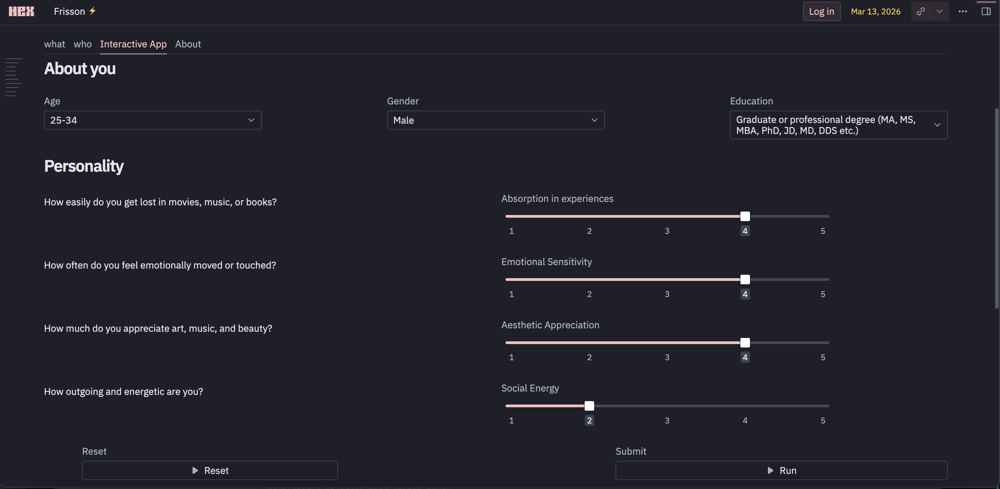

The Project Goal
Making an Invisible Experience/ Phenomenon Measurable
Frisson, or aesthetic chills, is the physical response people experience during emotionally powerful moments in music, speeches, and films.
The question: Can patterns in what people feel, what they consume, and who they are help explain why certain content resonates?
Frisson explores the relationship between content characteristics, emotional responses, and individual differences. The project combined publicly available community discussions with experimental data, using natural language processing, audio feature extraction, and machine learning and an interactive predictor to examine that question.
The goal was to move beyond describing emotional experiences toward identifying signals that could inform content discovery and personalization.
Product Opportunity
Emotional Resonance behind the Engagement Metrics
Traditional engagement metrics (Views, clicks, and watch time) capture consumption, but they do not fully explain emotional impact.
| Potential audience | Unanswered question | Potential product value |
|---|---|---|
| Content consumers | What content might resonate with me? | More relevant content discovery |
| Creators, speakers and musicians | What characteristics are associated with powerful audience responses and compliment enagagement? | Additional signals for creative experimentation |
| Content platforms | How might emotional preferences complement existing recommendation signals? | A potential personalization input |
Product hypothesis: Combining content-level signals with individual characteristics could make an inherently subjective experience more understandable and actionable. Conceptually, this could support content discovery, creative experimentation to explore what resonates and complement conventional engagement data.
Scope decision: Frisson explores whether observable patterns exist in content and self-reported experiences and can be opportunity to provide useful signals about emotional responses.
Analysis Framework
Questions that Deserve Investigation for Measurable Dimensions
Rather than treating frisson as a single outcome with one obvious explanation, the problem was decomposed into three analytical dimensions for defining useful dimensions of analysis before selecting metrics, features, or modeling techniques.
| Analytical dimension | Factors selected | Why these factors? | Product decision it could inform |
|---|---|---|---|
| Content characteristics | Media type, audio structure, emotional language, narrative themes | Identify characteristics associated with reported chills | Which content attributes could support discovery or classification? |
| Individual differences | Age, gender, education, absorption, emotional responsiveness, aesthetic interests, extraversion | Explore variation between individuals rather than assuming a universal response | Could personalization benefit from individual-level signals? |
| Reported experience | Chills, goosebumps, tears, shivers, intensity and reminiscence | Distinguish the occurrence of an experience from its physical manifestations and reported intensity | Which outcomes are meaningful enough to analyze or predict? |
This framework established separate analytical workstreams to help distinguish content characteristics from audience characteristics instead of assuming that the same content affects everyone in the same way.
Data Strategy
Combining Reported descriptions and Experimental Data
The two sources served different analytical purposes. Community posts provided naturally occurring descriptions or Behavioral Signals of experiences and the content people associated with them. Experimental data provided a complementary basis for examining reported responses and individual characteristics.
A key limitation was that community posts are self-selected, self-reported, and inconsistent in detail. The source, quality, context, and limitations of each signal determine what product decisions it can reasonably support. The analysis therefore treated extracted patterns as signals to investigate rather than universal behavioral rules.
Content Intelligence
Making Different Media Comparable
To investigate content beyond broad categories, separate analytical approaches were developed, suited to different media types.
- Music : Tempo, dynamic range, brightness, harmonic ratio factors were examined to explore whether pacing, changes in intensity, and harmonic structure are associated with reported chills
- Speeches: Factors like Desire, caring, optimism and other emotion categories were examined to explore whether emotional language provides signals beyond the topic of a speech
- Videos: Factors like Inspiration, human connection, hope, sacrifice and other narrative themes were examined to examine whether the meaning and progression of a story are associated with reported responses.
- Community descriptions: Recurring terms for bodily sensations and experiences were examined to establish how people describe frisson in their own words
Decision logic: These methods transformed unstructured text and media descriptions into structured features that could be compared and explored. Importantly, the features were not interchangeable, Each medium needed an appropriate analytical lens - an acoustic measurement, an emotion label, and a thematic classification each represent a different kind of signal and carry different limitations.
Potential product application: These signals could be investigated as content metadata for content classification, recommendation, or creator-facing insights. It also established a basis for evaluating whether these signals are sufficiently interpretable and reliable for a product workflow.
Audience Intelligence / Segmentation
Exploring Individual Differences
The next analytical layer examined whether content-related patterns alone were sufficient, or reported frisson experiences could be modeled in relation to individual characteristics.
- Absorption (MODTAS) Factor: Represents tendency to become deeply immersed in experiences and explores whether immersion relates to reported chills
- Kama Muta (KAMF) Factor: Represents tendency to feel emotionally moved or touched and explore the relationship between emotional responsiveness and frisson
- Aesthetic interests: Represents appreciation of art, music, and beauty to examine whether aesthetic engagement relates to reported experiences
- Extraversion: Represents outgoingness, energy, and enthusiasm and checks whether broader personality differences offer additional explanatory value
Age, gender, and education provided additional segmentation dimensions to explore the relationship between individual traits and reported experiences.
Analysis to Interactive Prediction Feature
A Random Forest model was incorporated for an interactive predictor, allowing users to provide their demographics, characteristics and receive an estimate translating the analytical exploration charts into a user-facing experience. The concept creates a starting point or exploratory prototype for evaluating personalized content discovery.
Proposed Validation Approach
| Validation question | Evaluation approach |
|---|---|
| Does the model generalize to unseen data? | Holdout testing and cross-validation |
| Does it outperform a simple baseline? | Compare against majority-class and other appropriate baseline models |
| Are probability estimates meaningful? | Evaluate calibration and predictive performance |
| Does performance vary across groups? | Compare appropriate metrics across demographic segments |
| Is the feature useful to people? | Test comprehension, perceived relevance, and usefulness with target users |
Thus, the work extended beyond producing charts: it connected data preparation, feature extraction, exploratory analysis, modeling, and user interaction into a single analytical experience. Frisson demonstrates how exploratory data analysis can generate hypotheses for a potential product capability.